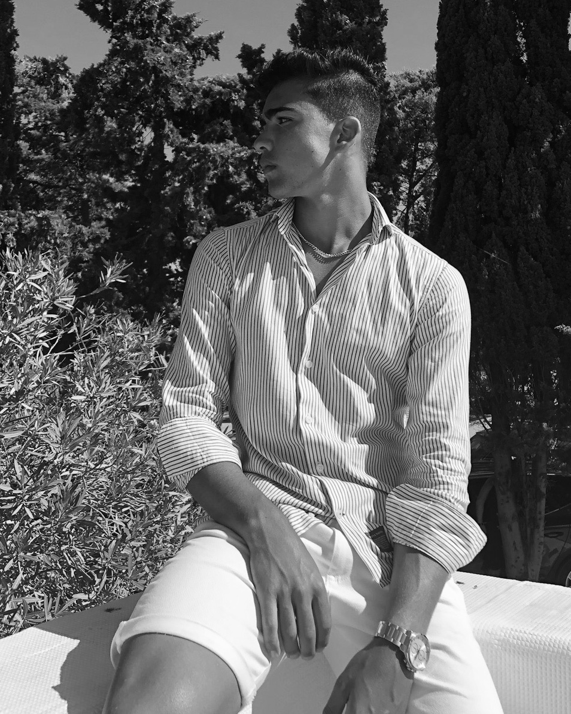

<ion-header [translucent]="true">
  <ion-toolbar class="tb">
    <ion-title class="tt" slot="start">
      <b>
        Home
      </b>
    </ion-title>
    <ion-buttons slot="end" (click)="changeDarkMode()">
      <input type="checkbox" name="isChecked" [(ngModel)]="isChecked">
      <label for="darkmode-toggle"></label>
    </ion-buttons>
  </ion-toolbar>
</ion-header>

<ion-content [fullscreen]="true">
  <div class="container">
    <div class="row">
      <div class="image">
        
      </div>
      <div class="text">{{ 'hi' | translate  }}</div>
    </div>
    <div class="description">
      <div class="desc">I'm <b>Lucas Maciel</b></div>
    </div>
    <div class="infos">
      <div class="inf">Web Dev student, based in Póvoa de Varzim, Porto</div>
    </div>
    <div class="images">
      <div class="icon">
        <ion-icon name="logo-linkedin"></ion-icon>
      </div>
      <div class="icon">
        <ion-icon name="logo-github"></ion-icon>
      </div>
      <div class="icon">
        <ion-icon name="logo-instagram"></ion-icon>
      </div>
      <div class="icon">
        <ion-icon name="logo-twitter"></ion-icon>
      </div>
      <button class="button" (click)="tab1()">
        Skills
        <ion-icon class="next" name="arrow-forward"></ion-icon>
      </button>
    </div>
  </div>
</ion-content>